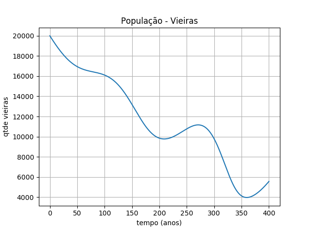

Instrumentação e Medição - Professor Fábio F.
A disciplina de Intrumentação e Medição buscou introduzir aos alunos conceitos básicos de elétrica e, uma iniciação ao processo de calibração de instrumentos de medição, como termômetros e sensores. Para isso, todo um conteúdo de tratamento estatístico seria trabalhado, visando aproximar uma margem de erro e uma linha de tendência nas medições efetuadas, calibrando o dispositivo. A junção entre a parte elétrica e estatística esteve justamente neste projeto: confeccionar uma estação meteorológica, regida por sensores.
A estação meteorológica seria montada num Arduino Uno (microcontrolador). Programando-o, ele interpretaria os sinais recebidos pelos sensores utilizados. Para a montagem, seria necessária a confecção de uma PCB (Placa de Circuito Impresso), na qual seriam soldados os sensores e, encaixada no microcontrolador. A parte de medição estava justamente em efetuar diversas medidas com os sensores a serem utilizados, a fim de calibrá- los. Passar-se-ia o cálculo matemático da linha de tendência e margem de erro ao código do Arduino e, por fim, os sinais recebidos seriam convertidos e enviados a um monitor LCD.
Terminada a montagem da mini estação, teríamos em mãos um circuíto com um LCD, no qual eram dispostos valores de temperatura (LM35) , umidade relativa do ar (DHT22), pressão atmosférica (BMP180) e intensidade luminosa (LDR). Para que a estação funcionasse, bastava ligá-la a uma fonte de tensão, podendo ser inclusive uma porta USB de um computador.
Voltar